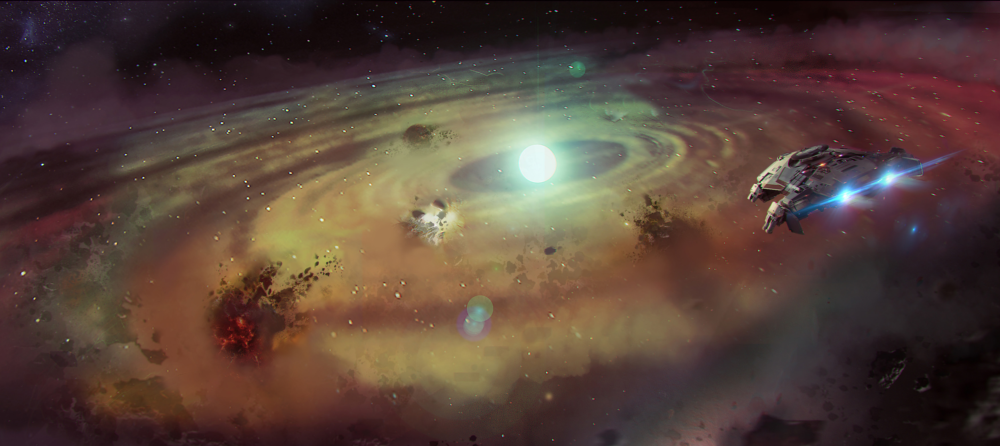

SYSTEM: GURZIL

Excurs - System: Gurzil
Wie ist unser Sonnensystem entstanden? Wie wird ein Planet geboren? Fragen wie diese plagen für gewöhnlich Denker und Wissenschaftler. Sogar als die Menschheit flügge wurde und Ende des 21. Jahrhunderts in die Sterne auszog, war die Erforschung der Anfangstage unseres Systems eher theoretischer Natur. Wir mussten bis zum 26. Jahrhundert und dutzende erforschte Systeme warten, bevor wir ein System in den ersten Tagen seiner Entstehung finden konnten. Ein System, in dem man das Phänomen hautnah betrachten und auf Fragen, die seit dem Altertum gestellt werden, besser antworten konnte.
Leider wurde der wissenschaftliche Zugang zu diesem System aufgrund der Angst und Paranoia dieser Ära beschränkt und seine Existenz für beinahe dreihundert Jahre im Nebel des Krieges versteckt gehalten.
Die Jagd nach Jump Points hatte sich spürbar verkompliziert. Als Reaktion darauf gründete das UPE das Imperial Cartography Center (ICC), um ihre Bemühungen, nach Jump Points zu suchen und neue Systeme zu katografieren, in einer Behörde zu vereinen. Sie setzten auch eine Reihe strikter Richlinien auf, um sicherzustellen, dass jeder militärische NavJumper in den diplomatischen Protokollen und Vorgehensweisen geschult war, um zukünftig jegliche potentielle Konflikte vermeiden zu können.
Dahunsil Kosoko ließ sich nicht von der Gefahr abschrecken. Nachdem er acht Monate damit verbrachte hat, sich nach einem Schiffsabsturz, bei dem er eines seiner Beine verloren hatte, zu erholen, trat Kosoko aus der Klinik in Prime, aß ein paar Toreadors zu Mittag und besorgte sich ein neues Schiff.
Nach Auffüllen seiner Vorräte macht er sich mit dem Ziel “sich seinen Weg durch das ‘Verse zu erscannen” auf den Weg in das Hadrian System (damals noch Nivelin genannt). Allerdings sollte er es nie so weit schaffen. Nach nur drei Wochen intensiver Scans entdeckte er im Jahr 2539 ein Jump Point in das Gurzil System. Dort angekommen rechnete Kosoko mit einer wartenden Xi’An Flotte, fand jedoch etwas sehr viel Eindrucksvolleres: eine protoplanetare Scheibe aus Gas und Mineralien, die um einen Typ K Hauptreihenstern wirbelten.
Das System wurde als die wissenschaftliche Entdeckung des Jahrhunderts gehandelt und lieferte der Forschungsgemeinschaft einen bisher nicht gekanntem Einblick in die Enstehung eines Systems. Kosoko reichte den Papierkram für seine Entdeckung ein, um das System nach seiner Tante Odara taufen zu lassen. Allerdings musste das UPE zu seinem Leidwesen intervenieren. Im Jahr 2542 erschien, während ICC-Gutachter noch immer das System einschätzten, ein Xi’An Scout Schiff durch einen anderen, bisher unbekannten Jump Point.
Das Xi’An Schiff stellte sich als weiterer Erkunder heraus, vielleicht sogar ihre Version einer Teesa Morrison, und da das Odara System noch nicht Teil des Xi’An Empire war, wurde es ihm angegliedert. Genauer gesagt, war es mit dem Rihlah System verbunden, der Heimat der Militär-Welt Shorvu. Das UPE zog seine Vermesser schnell zurück und verbot Zivilisten den Zugang zu diesem System.
Das System wurde entsprechend des militiärischen Standards aller anderen Systeme rund um die Perry Line auch umgehend von Odara umbenannt: nach Kriegsgöttern. Genauer gesagt nach einer antiken Berber-Gottheit – Gurzil. Das System ließ sich aufgrund der sich ausdehnende Scheibe aus verschmelzender planetaren Masse unmöglich überwachen, wodurch es seinen zweiten und noch deutlich unheilvolleren Namen erhielt: die Finstere See (the Dark Sea). In den nächsten zwei Jahrhunderten sollte Gurzil die Heimat unzähliger militärischer Operationen und einem Dutzend Zwischenfälle werden. Obwohl die offizielle Todesursache immer “Kollisionen aufgrund schlechter Sichtverhältnisse” zugeschrieben wurde, tauchten Gerüchte auf, dass dafür militärische Xi’An Attentäterteams und Widerstandsnester tevarinischer Flüchtlinge, die sich in den Clustern versteckt hielten, verantwortlich waren.

“Wenn man reingeht, stehen die Chancen 50:50, dass man auch wieder rauskommt, würde ich sagen. Das ist das Risiko mit der Finsteren See. Sie hat wahrscheinlich sogar schon eine ganze Menge Leute getötet, die sie ängstlich durchflogen haben. Aber nicht mich. Ich habe bisher immer ein Patt erreicht.” – Lt. Demian Ward, UEEN (Ret), Hunter Killer: My Life on the Xi’An Front
Leider wurde der wissenschaftliche Zugang zu diesem System aufgrund der Angst und Paranoia dieser Ära beschränkt und seine Existenz für beinahe dreihundert Jahre im Nebel des Krieges versteckt gehalten.
Die Finstere See
Mitte des 26. Jahrhundert war eine komplizierte Zeit der menschlichen Expansion in die Sterne. Technologische Fortschritte brachten der breiten Masse Jump Point Scanner zu erschwinglichen Preisen, wodurch auch mehr und mehr Zivilisten mit den “professionellen” Wegfindern konkurrieren konnten. Diese Zeitspanne der raschen Expansion kam zu einem abrupten Stop, als das Unternehmen Gaia Planet Services damit begann, einen Planeten im später als Pallas bekannten System zu terraformen, ohne zu bemerken, dass der Planet bereits von einer anderen Spezies bewohnt wurde. In den folgenden 57 Tagen erhielt die Menschheit eine ernüchternde Vorstellung vom Xi’An Empire, als sie über die Freigabe der Terraformer verhandelte. In den ersten paar Jahren nach dem Pallas Vorfall gab es nur zwei bekannte Systeme, die in den Xi’An Raum führten. Im Jahr 2531 entdeckte Teesa Morrison das Baker-Hadur Jump Point. Da ihr das anhaltende Vermächtnis, zu dem das Finden eines neuen Systems für gewöhnlich führte, abgesprochen wurde, genoss sie eine kurzen Augenblick des Ruhms, nachdem die Aufnahmen ihres Flugs seinen Weg zu den NewsOrgs gefunden hatte. Darin wandelte sich ihr lautstarker Freudentaumel darüber, das Jump Point erfolgreich gemeistert zu haben, schnell zu einem schrillen Schrei, als sie sich auf der anderen Seite einer Flotte militärischer Xi’An Schiffe gegenüberstehen sah.Die Jagd nach Jump Points hatte sich spürbar verkompliziert. Als Reaktion darauf gründete das UPE das Imperial Cartography Center (ICC), um ihre Bemühungen, nach Jump Points zu suchen und neue Systeme zu katografieren, in einer Behörde zu vereinen. Sie setzten auch eine Reihe strikter Richlinien auf, um sicherzustellen, dass jeder militärische NavJumper in den diplomatischen Protokollen und Vorgehensweisen geschult war, um zukünftig jegliche potentielle Konflikte vermeiden zu können.
Dahunsil Kosoko ließ sich nicht von der Gefahr abschrecken. Nachdem er acht Monate damit verbrachte hat, sich nach einem Schiffsabsturz, bei dem er eines seiner Beine verloren hatte, zu erholen, trat Kosoko aus der Klinik in Prime, aß ein paar Toreadors zu Mittag und besorgte sich ein neues Schiff.
Nach Auffüllen seiner Vorräte macht er sich mit dem Ziel “sich seinen Weg durch das ‘Verse zu erscannen” auf den Weg in das Hadrian System (damals noch Nivelin genannt). Allerdings sollte er es nie so weit schaffen. Nach nur drei Wochen intensiver Scans entdeckte er im Jahr 2539 ein Jump Point in das Gurzil System. Dort angekommen rechnete Kosoko mit einer wartenden Xi’An Flotte, fand jedoch etwas sehr viel Eindrucksvolleres: eine protoplanetare Scheibe aus Gas und Mineralien, die um einen Typ K Hauptreihenstern wirbelten.
Das System wurde als die wissenschaftliche Entdeckung des Jahrhunderts gehandelt und lieferte der Forschungsgemeinschaft einen bisher nicht gekanntem Einblick in die Enstehung eines Systems. Kosoko reichte den Papierkram für seine Entdeckung ein, um das System nach seiner Tante Odara taufen zu lassen. Allerdings musste das UPE zu seinem Leidwesen intervenieren. Im Jahr 2542 erschien, während ICC-Gutachter noch immer das System einschätzten, ein Xi’An Scout Schiff durch einen anderen, bisher unbekannten Jump Point.
Das Xi’An Schiff stellte sich als weiterer Erkunder heraus, vielleicht sogar ihre Version einer Teesa Morrison, und da das Odara System noch nicht Teil des Xi’An Empire war, wurde es ihm angegliedert. Genauer gesagt, war es mit dem Rihlah System verbunden, der Heimat der Militär-Welt Shorvu. Das UPE zog seine Vermesser schnell zurück und verbot Zivilisten den Zugang zu diesem System.
Das System wurde entsprechend des militiärischen Standards aller anderen Systeme rund um die Perry Line auch umgehend von Odara umbenannt: nach Kriegsgöttern. Genauer gesagt nach einer antiken Berber-Gottheit – Gurzil. Das System ließ sich aufgrund der sich ausdehnende Scheibe aus verschmelzender planetaren Masse unmöglich überwachen, wodurch es seinen zweiten und noch deutlich unheilvolleren Namen erhielt: die Finstere See (the Dark Sea). In den nächsten zwei Jahrhunderten sollte Gurzil die Heimat unzähliger militärischer Operationen und einem Dutzend Zwischenfälle werden. Obwohl die offizielle Todesursache immer “Kollisionen aufgrund schlechter Sichtverhältnisse” zugeschrieben wurde, tauchten Gerüchte auf, dass dafür militärische Xi’An Attentäterteams und Widerstandsnester tevarinischer Flüchtlinge, die sich in den Clustern versteckt hielten, verantwortlich waren.
Nach dem Fall
In der Zeit nach dem Messer Regime durchlief die Perry Line eine fundamentale Veränderung. Imperatrix Toi versuchte, die Versprechen des Akari/Kray Abkommens zu ehren, rüstete die Perry Line ab und teilte die Systeme zwischen den Menschen und Xi’An auf. Obwohl Gurzil keine Planeten besaß, stimmten viele Mitglieder des UEE aus sowohl wissenschaftlicher Relevanz als auch wegen seiner reichhaltigen Ressourcen für dieses System. Nachdem das System von dem UEE beansprucht worden war, brach im Senat eine faszinierende Debatte aus. Mit der Übernahme des ‘Fair Chance Acts’ im Jahr 2795, der den Schutz sich entwickelnder Spezies sicherstellt, fanden sich Verteidiger der wissenschaftlichen Community und Lobbyisten des Bergbaukonsortiums in einem Streit darüber wieder, was genau sie mit Gurzil machen sollten. Während die Bergbaufirmen wissenschaftliche Studien in dem System zwar unterstützten, forderten Wissenschaftler, dass Gurzil unter den Schutz des Fair Chance Acts fallen sollte, da es durch seine Zusammensetzung und den Stern selbst alle Elemente besaß, um sich schlussendlich in ein System mit bewohnbaren Planeten und damit auch Leben zu verwandeln. Sie glaubten, dass Versuche, die Mineralien in dem System abzubauen, dessen Entwicklung unwiederbringlich beeinträchtigen und daher die Möglichkeit auf sich natürlich entwickelndes Leben gefährden würden. Ihre Gegner argumentierten hingegen, dass sie über eine Zeitspanne von Millionen oder sogar Hunderten Millionen Jahren sprachen.Der aktuelle Stand
Die Debatte über Gurzil hat sich seither auf die ein oder andere Weise fortgesetzt. Obwohl das UEE den Bergbau innerhalb des grünen Bandes im System streng verboten hat, haben sie es offiziell jedoch auch nicht unter den Schutz des Fair Chance Acts gestellt. Ungeachtet seines Nutzens bietet das Gurzil System Besuchern einen einzigartigen Einblick in die Geburt eines Sonnensystems. Auf einer Reise duch das System wird man einer Fülle wissenschaftlicher Forschungsstationen bei dem Versuch, die Geheimnisse des Universums zu entschlüsseln, sowie hinter der Frostgrenze zahlreichen Bergbaustationen begegnen. Besuchern wird empfohlen, eine der unzähligen wissenschaftlichen Touren in dem System mitzumachen.
Reisewarnung
Aufgrund der protoplanetaren Scheibe stellen die Sichtverhältnisse in Gurzil noch immer eine ständige Gefahr dar. Nehmen Sie sich in Acht, wenn Sie durch das System reisen und nehmen Sie jegliche Gefahren ernst.Ein Flüstern im Wind
“Da merkte ich, dass ich für das Fliegen bestimmt war. Eine solch schreckliche Tragödie überlebt zu haben und es nur noch mit dem Gedanken ‘Wann kann ich endlich wieder da raus’ durch wirklich harte Zeiten zu schaffen… Ich weiß nicht. Das ist seltsam, oder?” – Dahunsil Kosoko, 2940“Wenn man reingeht, stehen die Chancen 50:50, dass man auch wieder rauskommt, würde ich sagen. Das ist das Risiko mit der Finsteren See. Sie hat wahrscheinlich sogar schon eine ganze Menge Leute getötet, die sie ängstlich durchflogen haben. Aber nicht mich. Ich habe bisher immer ein Patt erreicht.” – Lt. Demian Ward, UEEN (Ret), Hunter Killer: My Life on the Xi’An Front